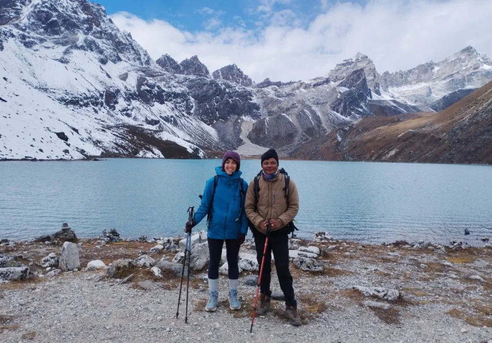
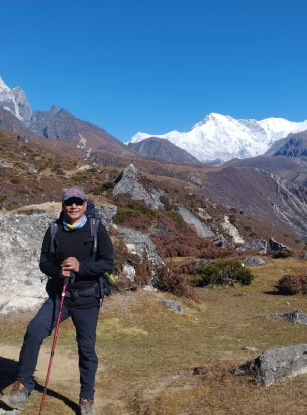
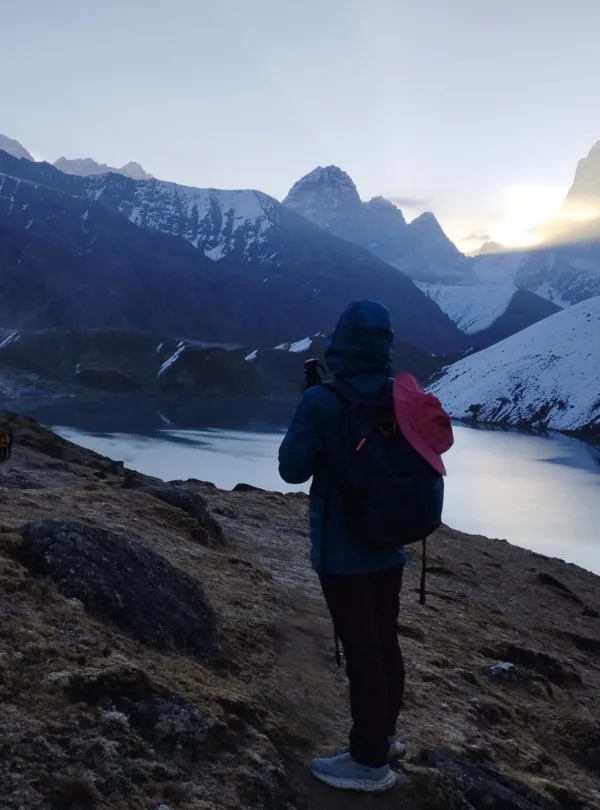
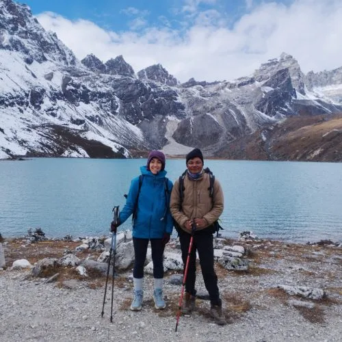
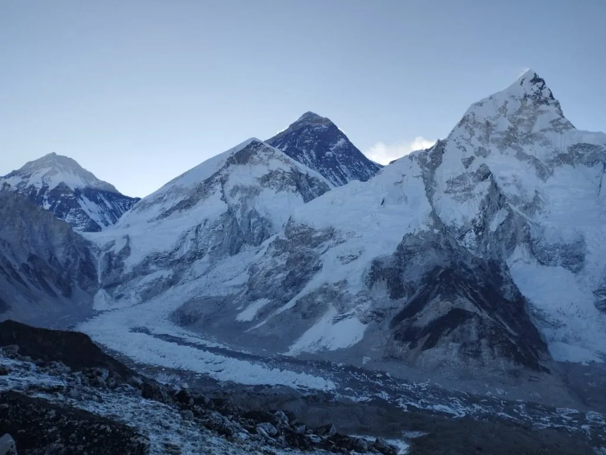

Our Gokyo Lakes Trek (12 Days) with Igloo Himalaya Treks went beyond every expectation we had. What first pulled us towards them was their strict safety protocol and personal care. From start to finish, Sagar and our expert team made sure our Gokyo Lakes Trek was comfortable, safe, and well-managed every single day!
Everest Region • Turquoise Glacial Lakes
5.0
reviews on TripAdvisor
5.0
169 reviews on Google
Gokyo Lakes Trek — 12 Days
Follow the Gokyo Valley through Namche Bazaar, Dole and Machhermo to mountain lakes beneath Cho Oyu. Our 12-day Gokyo Lakes Trek combines village trails, forest walking and higher valley scenery, with an acclimatisation day in Namche before continuing towards Gokyo. You spend a night beside the lakes, then climb Gokyo Ri for views of Everest and surrounding peaks in clear weather. The return follows the valley through Dole and Namche to Lukla before your flight to Kathmandu.

Travelers' Choice
Best of the Best 2026




Key Trip Facts
DURATION
12 Days
12 days, including 9 days on the trekking route
DIFFICULTY
Moderate to Challenging
Moderate to challenging; steep paths, altitude and a long Gokyo Ri day
MAXIMUM ALTITUDE
5,357 m / 17,575 ft
Approximately 5,357 m at Gokyo Ri
DESTINATION
Nepal
Nepal
ACTIVITY
Trekking
Trekking
ACCOMMODATION
Hotel & Teahouses
2 nights in a 3-star Kathmandu hotel and 9 nights in twin-sharing teahouses
TRANSPORT
Flights & Transfers
Return Lukla flights, private airport transfers and Manthali ground transfers when required
MEALS
Full Board on Trek
Breakfast in Kathmandu; full board during the trek, with tea or coffee and daily seasonal fruit
RECOMMENDED SEASON
Spring & Autumn
Spring (March–May) and autumn (September–November)
TREK STARTS
Lukla
Lukla
TREK ENDS
Lukla
Lukla
TREK REGION
Everest / Khumbu
Everest / Khumbu
PACKAGE START POINT
Kathmandu
Kathmandu
PACKAGE END POINT
Kathmandu
Kathmandu
Gokyo Lakes Trek Package Overview
Our 12-day Gokyo Lakes Trek follows the Dudh Koshi valley through Namche Bazaar before turning towards Dole, Machhermo and Gokyo. The route leads to mountain lakes beside the Ngozumpa Glacier, with a climb to Gokyo Ri at approximately 5,357 m. You return through Dole and Namche, following the valley back to Lukla for your flight.
After flying to Lukla, walk through Phakding and cross suspension bridges on the way to Namche Bazaar. We spend two nights here, including an acclimatisation hike above the town. Beyond Namche, the trail turns towards Mong La and Phortse Tenga before climbing through forest to Dole. Sherpa villages, prayer wheels and mani walls line sections of the approach, reflecting the Buddhist traditions of the people who live here.
From Dole, continue through Luza to Machhermo as forest gives way to open grazing slopes. The trail then reaches the lower lakes before arriving at Gokyo Village beside Dudh Pokhari. An early morning hike to Gokyo Ri offers views across the lakes, glacier and surrounding mountains. Afterwards, descend through Machhermo to Dole for the night.
The trek involves consecutive walking days, uneven ground and substantial gains in sleeping altitude. Namche provides an acclimatisation stop, while the Gokyo Ri climb combines a steep ascent with a longer descent to Dole. Technical climbing skills are not normally required. Prepare for hill walking, cold mornings and changing conditions, and discuss your experience and any health concerns before departure.
You stay in mountain teahouses during the trek and a hotel in Kathmandu. The 12-day programme covers your arrival, the walking journey, return travel and departure from Nepal.
Key Route Highlights & Destinations
Lukla
Phakding
Namche Bazaar (3,440 m)
Dole (4,200 m)
Luza
Machhermo (4,470 m)
Gokyo Lakes (4,790 m)
Gokyo Ri (5,357 m)
Ngozumpa Glacier Viewpoint
Fourth & Fifth Lakes
Planning your Gokyo Lakes Trek?
Chat with our senior Sherpa guides — real local experts, not bots.
Replies within 15–30 minutes
Gokyo Lakes Trek Package Highlights
Climb Gokyo Ri at approximately 5,357 m, where clear weather offers views of Everest, Lhotse, Makalu, Cho Oyu and the surrounding mountains.
Walk beside Gokyo Lakes, reaching Gokyo Village on the shore of Dudh Pokhari, the third lake.
See the Ngozumpa Glacier from higher viewpoints, with the Gokyo Lakes below and surrounding mountains rising above.
Spend an acclimatisation day in Namche Bazaar, with a shorter hike above the town.
Follow forest trails through Phortse Tenga to Dole, then continue across higher grazing slopes towards Machhermo.
Explore Sherpa villages along the approach, passing prayer wheels and mani walls before returning through Namche and Lukla to Kathmandu.
Why Book the Gokyo Lakes Trek Package with Igloo Himalaya Treks?
We help you prepare in Kathmandu and support your walking journey through the Khumbu. This package includes the following arrangements.
Trek Briefing and Gear Check
Before leaving Kathmandu, we explain the programme, check your essential equipment and help with last-minute preparations. You can ask questions about the walking days, accommodation and what to carry.
Guide and Porter Support
Your package includes a licensed, English-speaking guide and porter assistance during the trek. Wages, meals, accommodation, insurance and equipment are covered, supporting the team who lead the trek and carry luggage.
Equipment Provided for the Trek
We provide a sleeping bag, down jacket and duffel bag for your gear. All three are supplied for use during the trip and must be returned once the trek is complete.
Communication When Plans Change
Weather can affect Lukla flights and the trekking schedule. Our team keeps you informed, explains the available options and discusses the next steps with you, including any additional accommodation or transport costs.
Day 1: Arrival in Kathmandu
Arrival & Airport Transfer — Kathmandu, approximately 1,400 m — 3-Star Hotel Check-in
Welcome to Nepal. Our representative meets you at Tribhuvan International Airport and accompanies you to your hotel. After you settle in, we go through the trekking programme, check your essential equipment and discuss any questions you have.
Depending on your arrival time, you can explore the nearby streets of Thamel or rest after your flight. We also help with any final preparations before you leave for the Everest region.
Day 2: Fly to Lukla and Trek to Phakding
Scenic Mountain Flight & River Valley Walk — Phakding, 2,610 m — 3–4 hrs (8 km)
Your mountain journey begins with a flight to Lukla at 2,860 m. Depending on airline operations and the season, the flight may depart from Kathmandu or Manthali Airport in Ramechhap.
After landing, you meet your trekking team and begin walking towards Phakding. The trail passes village homes, prayer wheels and forested slopes, with downhill stretches and shorter climbs along the way. Sections follow the Dudh Koshi River, introducing you to the valley you will explore over the coming days. We spend the night in Phakding.
Day 3: Trek from Phakding to Namche Bazaar
Sagarmatha National Park Ascent — Namche Bazaar, 3,440 m — 5–6 hrs (10–11 km)
We follow the Dudh Koshi through villages and pine forests, passing Benkar and Monjo before entering Sagarmatha National Park. Your guide handles the permit checks along the route.
Suspension bridges connect the valley trails, followed by a sustained uphill walk towards Namche. This final climb is the most demanding part of the day, so we allow time for breaks. Namche’s shops, lodges and houses spread across the hillside, making it an important trading town and a useful place to spend the next two nights.
Day 4: Acclimatisation Day in Namche Bazaar
Acclimatisation Hike to Hotel Everest View — Namche Bazaar, 3,440 m (Hike 3,880 m) — 3–4 hrs (5–6 km)
We stay another night in Namche and take a shorter hike above the town. A usual option is the trail towards Hotel Everest View, where clear weather offers views of Everest and nearby peaks.
Your guide chooses the walk according to conditions and how the group is feeling. Afterwards, we return to Namche for the night. The afternoon gives you time to rest, visit the shops or stop at a café before continuing towards Dole tomorrow.
Day 5: Trek from Namche Bazaar to Dole
Ascent via Mong La Pass & Phortse Tenga — Dole, approximately 4,200 m — 5–6 hrs (12 km)
Leaving Namche, follow the hillside towards Kyangjuma before turning onto the Gokyo trail. The route climbs to Mong La, then descends towards Phortse Tenga, with mountain views when the weather allows.
After crossing the lower slopes, climb through pine and rhododendron forest towards Dole. This stage gains considerable sleeping altitude, despite the descent along the way. We keep a measured pace and check how you are feeling. At Dole, settle into your teahouse and rest before continuing towards Machhermo tomorrow morning.
Day 6: Trek from Dole to Machhermo
High Alpine Grazing Slopes beneath Cho Oyu — Machhermo, approximately 4,470 m — 4–5 hrs (7 km)
From Dole, the path climbs above the village and follows the hillside through open grazing country. Pass Lhabarma and Luza, with views towards Cho Oyu in clear weather. The higher altitude calls for steady walking.
Forests become less common as the trail continues across slopes with low vegetation and stone buildings. We reach Machhermo and check into a teahouse for the night. Use the afternoon to rest and get ready for tomorrow’s walk towards the lakes and Gokyo Village.
Day 7: Trek from Machhermo to Gokyo Village
Ascent to Sacred Lakes & Ngozumpa Glacier — Gokyo Village, approximately 4,750 m — 4 hrs (6 km)
Leaving Machhermo, follow the valley towards the lakes. Rocky sections and uneven ground call for care as the trail rises beside the Ngozumpa Glacier. We pass the first lakes before reaching Gokyo Village, with breaks along the way.
Gokyo stands beside Dudh Pokhari, the third lake, with teahouses overlooking the water and surrounding slopes. After checking in, take time to rest and organise your warm layers. Tomorrow begins early with the planned Gokyo Ri hike before the descent.
Day 8: Climb Gokyo Ri and Trek to Dole
Gokyo Ri Summit Panorama (5,357 m) & Valley Descent — Dole, approximately 4,200 m — Full Day
We start before dawn and climb the steep path towards Gokyo Ri. The altitude makes this ascent demanding, so walk steadily and follow your guide’s directions throughout the hike.
In clear weather, the viewpoint offers views of Everest, Lhotse, Makalu and Cho Oyu, with the lakes and Ngozumpa Glacier below. After time at the top, descend carefully to Gokyo Village for breakfast and a break.
Continue down the valley through Machhermo and Luza to Dole. This is a long day combining the viewpoint with the descent; allow time for breaks en route.
Day 9: Trek from Dole to Namche Bazaar
Forest Valley Descent via Phortse Tenga & Mong La — Namche Bazaar, 3,440 m — 5–6 hrs (12 km)
From Dole, descend through forest towards Phortse Tenga before climbing back to Mong La. The return includes uphill stretches, with breaks to enjoy the mountain views along the way.
Beyond Mong La, follow the hillside towards Kyangjuma and rejoin the main trail to Namche Bazaar. Familiar shops, lodges and cafés come into view as we approach the town. Check into your teahouse and rest after the walk, then organise your belongings for tomorrow’s final trekking stage down towards Lukla.
Day 10: Trek from Namche Bazaar to Lukla
Final Trekking Stage via Dudh Koshi Valley — Lukla, 2,860 m — 6–7 hrs (20 km)
Our final trekking day follows the route down from Namche through Jorsalle, Monjo and Phakding. You cross familiar suspension bridges and return through the forested sections of the Dudh Koshi valley.
The approach to Lukla includes uphill stretches, so there is still some effort ahead after the main descent. On arrival, we check into the teahouse for the last night in the mountains. The evening gives you time to organise your belongings and spend time with your guide and porter team.
Day 11: Fly from Lukla and Return to Kathmandu
Morning Flight from Lukla to Kathmandu / Manthali — Kathmandu, approximately 1,400 m — Hotel Check-in
We prepare for the return flight from Lukla. Depending on the operating schedule, you may fly directly to Kathmandu or land at Manthali Airport and continue by road.
After reaching your hotel, the remaining time is free for rest, shopping or exploring nearby areas. Organise your belongings and confirm tomorrow’s airport transfer details with our team. Flight timing remains dependent on weather, airline schedules and airport operations.
Day 12: Departure from Kathmandu
Airport Transfer & Onward Journey — Kathmandu (1,400 m) — Farewell Nepal
Your 12-day Gokyo Lakes Trek programme ends today. After breakfast, you prepare for your onward journey. Depending on your departure time, there may be an opportunity for a final walk nearby before leaving the hotel.
Our representative accompanies you to Tribhuvan International Airport for your departure.
What’s Included in the Gokyo Lakes Trek Package
✓
Airport transfers: Pickup and drop-off for your arrival and departure in Kathmandu.
✓
Return Lukla flights: Domestic flights from Kathmandu or Manthali Airport, with the scheduled ground transfers when operating via Ramechhap.
✓
Accommodation: Two nights in a three-star Kathmandu hotel with breakfast, plus nine nights in twin-sharing teahouses along the trekking route through the Khumbu and Gokyo Valley.
✓
Meals: Breakfast in Kathmandu; breakfast, lunch and dinner during the trek, with tea or coffee and a daily serving of seasonal fresh fruit included throughout all nine scheduled trekking days.
✓
Guide and porter: Licensed English-speaking guide, porter assistance and staff wages, meals, accommodation and insurance.
✓
Permits and entry fees: Sagarmatha National Park entry permit and the Khumbu Pasang Lhamu Rural Municipality entry fee.
✓
Trekking equipment: A sleeping bag, down jacket and duffel bag, supplied for your use and all returned after the trekking programme.
✓
First-aid supplies: A medical kit and first-aid equipment carried by the team.
✓
Emergency coordination: Helicopter rescue coordination if required. Evacuation costs are excluded.
✓
Trip extras: Printed route map, completion certificate, government taxes, official fees and service charges.
What’s Not Included in the Gokyo Lakes Trek Package
✕
International flights and Nepal visa: Airfare to and from Nepal and your visa fee.
✕
Travel insurance: The cost of your insurance policy, which must cover high-altitude trekking and emergency evacuation.
✕
Emergency evacuation: Helicopter rescue costs. We provide rescue coordination, but the evacuation itself is not included.
✕
Personal equipment: Boots, clothing and other personal items beyond the sleeping bag, down jacket and duffel bag we provide.
✕
Extra food and drinks: Personal snacks, bottled water and drinks beyond the included meals, seasonal fruit and tea or coffee.
✕
Kathmandu expenses: Lunches, dinners, sightseeing activities, entrance fees and guided tours outside the itinerary.
✕
Teahouse services: Hot showers, Wi-Fi and device charging fees.
✕
Guide and porter tips: Gratuities for your trekking team.
✕
Additional costs: Excess flight baggage, extra accommodation, alternative transport and itinerary changes caused by delays or personal extensions are excluded.
Gokyo Lakes Trek Package Dates & Availability
Group Departures
If you would like to trek with other travellers, ask us about upcoming group departures. We’ll confirm the available dates, spaces and price for your chosen departure.
Private Trek Dates
Prefer to travel with your own group? Send us your preferred arrival date and number of travellers. We’ll check the arrangements for a private trek.
Prices are in US dollars and represent starting rates. Contact us with your travel dates and group size to confirm availability and your final quotation.
What to Pack for the Gokyo Lakes Trek Package
Pack layers for warmer walking days, cold mornings and evenings, and changing weather at higher elevations. Keep water, a warm layer, rain protection, medicines and valuables in your daypack. Use your main duffel for the rest of your belongings.
Checklist Progress
0 / 34 Packed
Hiking Gear
Clothing
Note: We provide an insulated down jacket, which must be returned after the trek.
Sleeping Equipment
Toiletries & Hygiene
Electronics
Documents & Personal Items
Included Gear Check: We provide a duffel bag, sleeping bag and down jacket, all returned after the trek. Our guide checks your equipment in Kathmandu before you leave for Lukla.
0/10 read
Click topics below to explore essential briefings
Trek Difficulty and Fitness
The Gokyo Lakes Trek involves steep paths, uneven ground and walking at high altitude. Most stages take several hours, with the Gokyo Ri climb followed by a longer descent to Dole. Technical climbing skills are not normally required, but the sustained effort calls for good preparation.
Previous hiking experience is helpful. First-time trekkers should build their endurance before departure and become comfortable walking uphill and downhill with a daypack.
Begin preparing around two to three months beforehand, allowing longer if you are starting from a low fitness level. Gradually combine regular walks, hill hikes and strength exercises. Practise in the boots you will wear on the trek.
Altitude and Acclimatisation
Our itinerary includes an acclimatisation day in Namche before continuing to Dole. The sleeping-altitude gain is substantial, so your guide reviews your current progress and how you are feeling.
Tell your guide immediately about headaches, nausea, dizziness or unusual fatigue. Do not continue to a higher sleeping altitude while experiencing symptoms of altitude illness. If symptoms worsen despite resting at the same elevation, descent is necessary. Reaching Gokyo Ri must remain secondary to your health.
Medical Conditions and Travel Insurance
If you have an existing medical condition, seek advice from a healthcare professional familiar with high-altitude travel before booking. Discuss your planned route and any medicines you take.
Arrange insurance covering the full Gokyo Lakes Trek, including Gokyo Ri at approximately 5,357 metres, emergency helicopter evacuation and medical treatment in Nepal. Check maximum altitude limits, exclusions, excess charges and the insurer’s assistance procedure. Carry your policy details and emergency contact number.
Accommodation and Room Facilities
You stay in a three-star hotel in Kathmandu and twin-sharing teahouses along the trekking route. The programme includes two hotel and nine teahouse nights, with Gokyo Village the highest overnight stop.
Higher on the route, expect simpler rooms and shared bathroom facilities. Comfort varies, and private rooms can be limited during busy periods. Be prepared for cold nights around Dole, Machhermo and Gokyo, with fewer services than Kathmandu.
Food and Dietary Requirements
Breakfast, lunch and dinner are included during the trek, with tea or coffee and daily seasonal fruit. Kathmandu hotel stays include breakfast.
Tell us about allergies or dietary requirements before booking so we can discuss what can be arranged along the route. Explain any strict requirements clearly, including concerns about shared cooking equipment.
Drinking Water
Carry reusable bottles and drink boiled or appropriately treated water. Water from a clear stream or an untreated tap may still contain germs.
Boiling is the most reliable way to kill germs. If boiling is unavailable, filtration followed by disinfection offers broader protection than many portable filters alone. Follow the instructions for your treatment equipment or tablets.
Guide and Porter Support
The package includes a licensed, English-speaking trekking guide and porter assistance. Your porter carries the main trekking luggage; you carry your daypack. Confirm the porter allocation and luggage allowance with us before departure.
Showers, Charging and Communication
Hot showers, Wi-Fi and device charging cost extra, with availability varying between lodges. Mobile reception and internet connections can be unreliable, particularly higher on the route. Carry a power bank and let family know that you may be out of contact for periods of the trek.
Permits and Documents
We arrange the Sagarmatha National Park permit and Khumbu Pasang Lhamu Rural Municipality entry permit as part of the package. Carry your passport, insurance details and copies of important documents. Your Nepal visa remains your responsibility.
Flight Delays and Extra Time
Lukla flights can be delayed or cancelled because of weather. During peak periods, flights may use Manthali Airport in Ramechhap, requiring a road transfer.
Your return flight is on Day 11, before departure on Day 12. Allow flexibility; weather delays or extra trekking days may require additional arrangements.
Altitude Profile of the Gokyo Lakes Trek Package
Your first trekking night is in Phakding, below Lukla. Overnight stops rise through Namche, Dole and Machhermo to Gokyo Village, the highest place you sleep. Gokyo Ri is a higher daytime hike before descending to Dole. The table separates overnight elevations from the viewpoint objective.
Interactive elevation map showing daily gain and acclimatization stopping points. Switch units below to convert between meters (m) and feet (ft).
Overnight Altitudes
12 Days| Day | Overnight Stop | Approximate Altitude |
|---|---|---|
| Day 1 | Kathmandu | 1,400 m |
| Day 2 | Phakding | 2,610 m |
| Day 3–4 | Namche Bazaar | 3,440 m |
| Day 5 | Dole | 4,200 m |
| Day 6 | Machhermo | 4,470 m |
| Day 7 | Gokyo Village | 4,750 m |
| Day 8 | Dole | 4,200 m |
| Day 9 | Namche Bazaar | 3,440 m |
| Day 10 | Lukla | 2,860 m |
| Day 11 | Kathmandu | 1,400 m |
| Day 12 | Departure | No overnight stay |
Elevations are approximate and follow the overnight stops in our itinerary.
Higher Places You Visit
Key High PointsDay 4 — Hotel Everest View:
~3,880 mAround 3,880 m, followed by a return to Namche Bazaar.
Day 5 — Mong La:
~3,975 mApproximately 3,975 m, crossed on the trail through Phortse Tenga towards Dole.
Day 7 — Gokyo Lakes:
~4,750 mApproximately 4,750 m at Gokyo, with an overnight stay beside Dudh Pokhari.
Day 8 — Gokyo Ri:
5,357 m (Summit)Approximately 5,357 m, the highest planned viewpoint, before returning to Dole.
Namche has two consecutive overnight stops for acclimatisation. Gokyo Ri is a daytime hike, with the planned overnight afterwards in Dole, lower down the valley.
Weather and Best Time for the Gokyo Lakes Trek Package
Spring, from March to May, and autumn, from September to November, are generally the best seasons for the Gokyo Lakes Trek. Both offer favourable walking conditions and opportunities for mountain views, although cold weather, cloud and snowfall remain possible higher up in the valley.
Interactive temperature graph showing daily variation along the route and monthly averages in the Gokyo & Everest region. Toggle between Celsius (°C) and Fahrenheit (°F).
Seasonal Weather Conditions
4 Seasons Breakdown
Spring
March–May
Lower trails become warmer, with rhododendrons around Namche and towards Dole. March can retain winter snow higher up, while April and May bring longer daylight and changing afternoon cloud.
Autumn
September–November
Early September can retain monsoon cloud and rain. October and November often offer clearer mountain mornings, with increasingly cold nights around Machhermo and Gokyo.
Winter
December–February
Expect severe cold, short daylight and possible snow or ice on upper trails. Lake surfaces may freeze, and teahouse availability and access to Gokyo Ri need checking.
Monsoon
June–August, extending to September
Rain, cloud and slippery lower trails can slow walking. Poor visibility affects mountain views and Lukla flights, while weather higher in the valley remains changeable.
These are seasonal patterns; conditions can vary from year to year and during an individual trek.
How Weather Changes Along the Route
Walking around Phakding and Namche can feel warm in sunshine. Conditions become colder as you continue towards Dole, Machhermo and Gokyo, particularly before sunrise, after sunset and on exposed paths.
Even during spring and autumn, nights around Machhermo and Gokyo can fall below freezing. The early climb to Gokyo Ri also feels colder in the wind. Carry warm layers, gloves and weather protection, with a headtorch for the ascent.
Which Season Should You Choose?
Spring (March–May)
Choose spring if you prefer gradually warming days and flowering forests on the lower trail.
Autumn (September–November)
Choose autumn, particularly October or November, if mountain visibility is your main priority.
Note: Winter and monsoon require greater flexibility and preparation for less comfortable conditions.
Gokyo Lakes Trek Route Map
Our detailed topographic trail map illustrates the complete route through the Dudh Koshi and Gokyo Valleys, highlighting all key checkpoints, overnight mountain villages, acclimatization waypoints in Namche Bazaar, and the high vantage point of Gokyo Ri (5,357m).
Book the Gokyo Lakes Trek Package
Send us your preferred travel dates, number of travellers and any questions about the trek. We’ll check availability and confirm the price and arrangements for your group. If you are unsure whether the 12-day itinerary suits your fitness or schedule, tell us what you have in mind so we can help you plan.
Best Himalayan Trekking Reviews
Over 15,000 adventure seekers have explored Everest, Annapurna, and Manaslu with Igloo Himalaya Treks.

9 May

28 February

11 January

14 March


Gokyo Lakes Trek Package FAQs
General & Route
Can I do this trek without previous trekking experience?
∨
Yes, provided you prepare well and have suitable fitness. Previous hiking experience helps, but technical climbing skills are unnecessary. Before departure, practise longer hill walks with a daypack and become comfortable walking uphill and downhill on consecutive days.
What is the highest altitude on this itinerary?
∨
The highest planned point is Gokyo Ri at approximately 5,357 metres on Day 8. Your highest overnight stop is Gokyo Village at 4,750 metres. After the viewpoint hike, the route descends to Dole for the night.
Which mountains can I see from Gokyo Ri?
∨
In clear weather, Gokyo Ri offers views of Everest, Lhotse, Makalu and Cho Oyu, with the lakes and Ngozumpa Glacier below. Cloud and snowfall can limit visibility, so the ascent remains subject to conditions and health.
Do we sleep beside the Gokyo Lakes?
∨
Yes. You spend one night in a teahouse at Gokyo Village beside Dudh Pokhari, the third lake. This is the highest overnight stop on the route. The following morning includes Gokyo Ri before trekking downhill through Machhermo to Dole.
Does this itinerary cross Cho La or Renjo La?
∨
No. This itinerary follows the Gokyo Valley and climbs Gokyo Ri before returning through Dole and Namche. Everest Base Camp, Cho La and Renjo La belong to separate routes. Ask us about those packages if you want a different journey.
Do I need to carry my main trekking bag?
∨
Porter assistance is included, with allocation confirmed for your booking. You carry your daypack containing water, warm layers, weather protection, medicines and daily essentials. Keep your passport, money and valuables with you throughout the trek.
Do I need to bring a sleeping bag and down jacket?
∨
We provide a sleeping bag, down jacket and duffel bag, all returned after the trek. You remain responsible for personal items such as boots, clothing, toiletries and electronics. Confirm equipment suitability and any further requirements before departure.
Is Namche acclimatisation a rest day?
∨
It usually includes a shorter hike above Namche Bazaar, followed by a return to the same town to sleep. Your guide adjusts the walk according to conditions and how you are feeling before continuing higher.
Does being fit protect me from altitude sickness?
∨
No. Good fitness helps with the walking demands, but it does not prevent altitude illness. Fit and experienced trekkers can also become unwell. Follow the acclimatisation schedule and report symptoms immediately instead of assuming fitness will protect you.
What should I do if I feel unwell at altitude?
∨
Tell your guide immediately about headaches, nausea, dizziness or unusual fatigue. Do not ascend to a higher sleeping altitude while experiencing symptoms of altitude illness. If symptoms worsen despite rest at the same elevation, descent is necessary.
Is insurance covering trekking to 5,000 metres sufficient?
∨
No. Gokyo Ri reaches approximately 5,357 metres, above that limit. Ask your insurer to confirm coverage for the full route, emergency helicopter evacuation and medical treatment, including altitude restrictions, activity exclusions, excess charges and any relevant policy conditions.
Can I book as a solo traveller?
∨
Yes. You can enquire about joining a group departure or arranging a private trek. Send us your preferred dates so we can check the available options and confirm the price that applies to your booking.
MORE ADVENTURES
You Might Also Like
If you would prefer a high pass, Everest Base Camp or a longer route through the Khumbu, consider these packages.
 High Pass Adventure
14 Days
High Pass Adventure
14 Days
Gokyo Lake with Renjo La Pass Trek — 14 Days
Continue from Gokyo over Renjo La and descend through the western side of the Khumbu. This itinerary combines the lakes and Gokyo Ri with a high pass crossing, requiring additional preparation and suitable trail conditions.
 High Pass Combo
17 Days
High Pass Combo
17 Days
EBC Chola Pass Gokyo Trek — 17 Days
Combine Everest Base Camp and Kala Patthar with a crossing of Cho La into the Gokyo Valley. This longer route brings together the base-camp trail, high-pass walking and views from Gokyo Ri.

Two High Passes 16 DaysEverest ChoLa and Renjo La Pass Trek — 16 Days
Explore Gokyo and the Everest side of the Khumbu on a route crossing both Cho La and Renjo La. Two high passes add longer walking stages and more demanding terrain, making preparation, acclimatisation and current conditions especially important.
 Everest Classic
14 Days
Everest Classic
14 Days
Everest Base Camp Trek — 14 Days
Follow the Khumbu trail through Namche, Tengboche and Dingboche to Everest Base Camp, with a Kala Patthar hike. This route includes acclimatisation days and teahouse stays, offering a different objective and mountain viewpoint from the Gokyo itinerary.
Enquire about your preferred package for current prices and availability.